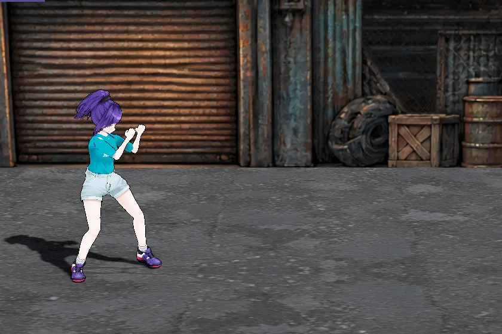
移動移動
左スティックWASD
左右で進み、上下で奥行きを移る。奥行き方向は横の 0.7 倍の速さ。向きは左右の 2 方向だけ。
素手・日本刀・銃を持ち替えて戦う。移動の速さが他の 2 人の 1.1 倍、攻撃の速さが 1.2 倍。 武器の持ち替え順は 素手 → 日本刀 → 銃 → 素手。動きはすべて 1 面で実際のボタン入力を流して撮ったもの（20 コマ/秒）。
| □J | 素手のパンチ（武器を持っているときは武器を使う）／敵の振りかぶり中はカウンター |
| ×K | キック／倒れた敵が近ければ追い打ち |
| R2U | 武器を使う（日本刀で斬る・銃は押している間連射・弾切れなら殴る） |
| L2R | 銃のリロード |
| L1Tab | 武器の持ち替え |
| R1Space | 回避（バックフリップ） |
| △O | 回転飛び蹴り／1.5 m 以内に敵がいればフランケンシュタイナー |
| ○E | 長押しで踊って回復 |

左右で進み、上下で奥行きを移る。奥行き方向は横の 0.7 倍の速さ。向きは左右の 2 方向だけ。
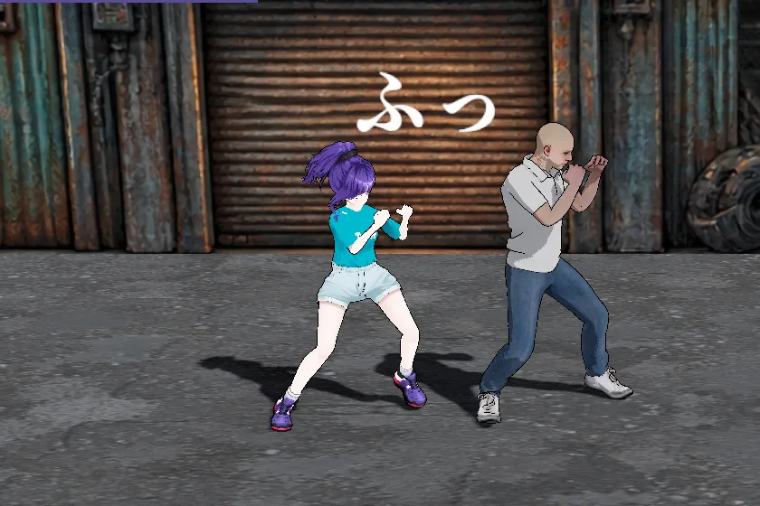
左ジャブ（1,000） → 右ストレート（2,000） → 左フック（2,600）。
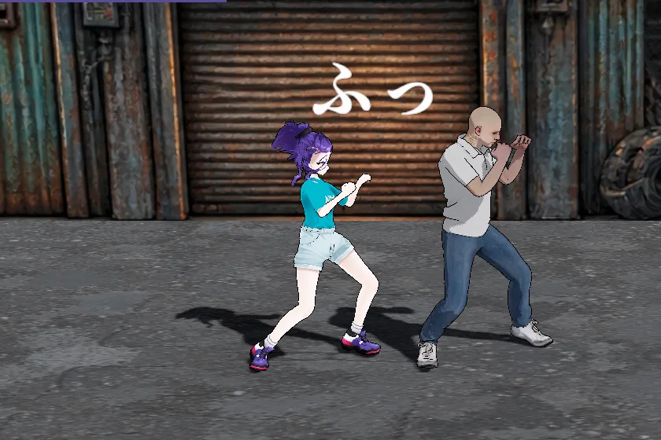
右膝（1,400） → 右ミドル（2,000） → 右ハイ（3,000）。
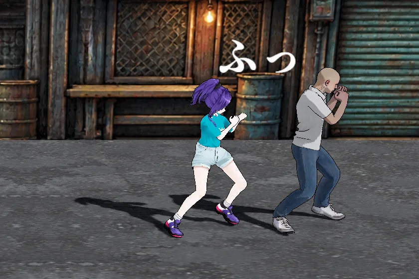
左ジャブ（1,000） → 右ストレート（2,000） → 右膝（1,400） → 左フック（2,600） → 右ハイ（3,000）。壁際（画面の端）に追い込んだ敵には 5 段すべて当たる（撮影は敵の後ろ 0.5 m が画面の端）。壁際以外では 4 段目の左フックで敵が離れ、5 段目は届かない。
左ジャブ（1,000） → 右膝（1,400） → 左ジャブ（1,000） → 右ストレート（2,000）。
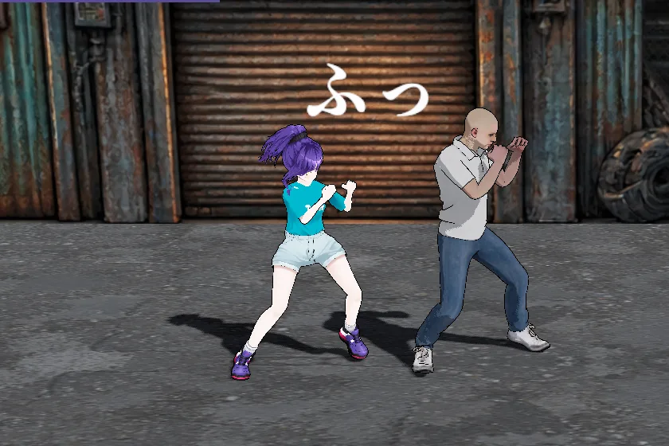
左ジャブ（1,000） → 右膝（1,400） → 右ミドル（2,000） → 左フック（2,600）。
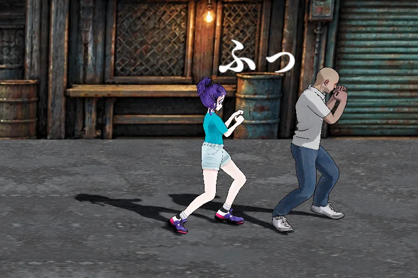
右膝（1,400） → 左フック（2,600） → 右ストレート（2,000） → 左ジャブ（1,000） → 右膝（1,400） → 左フック（2,600） → 右ハイ（3,000）。壁際（画面の端）に追い込んだ敵には 7 段すべて当たる（撮影は敵の後ろ 0.5 m が画面の端）。壁際以外では 2 段目の左フックで敵が約 1 m 離れ、3 段目以降は届かない。
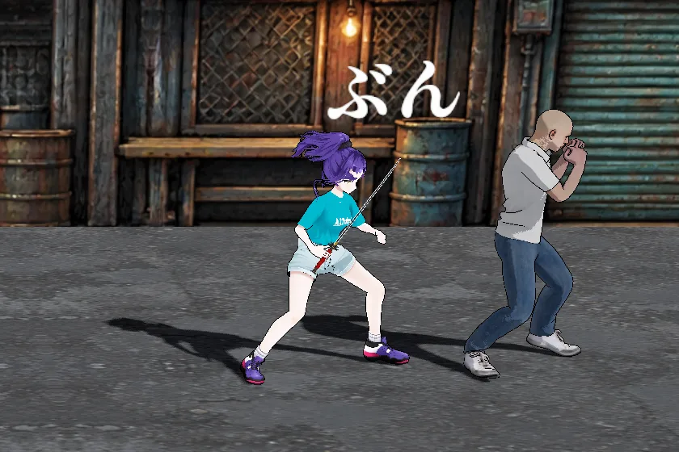
L1 で 素手 → 日本刀 → 銃 → 素手 と持ち替える。日本刀を持っていれば R2 か □ で斬る。押し続けると 3 段まで繋がる。3 段目の回転斬りは体の周り 360 度に当たる。壁際（画面の端）に追い込んだ敵には 3 段すべて当たる（撮影は敵の後ろ 0.5 m が画面の端）。壁際以外では 2 段目で敵が離れ、3 段目は届かない。
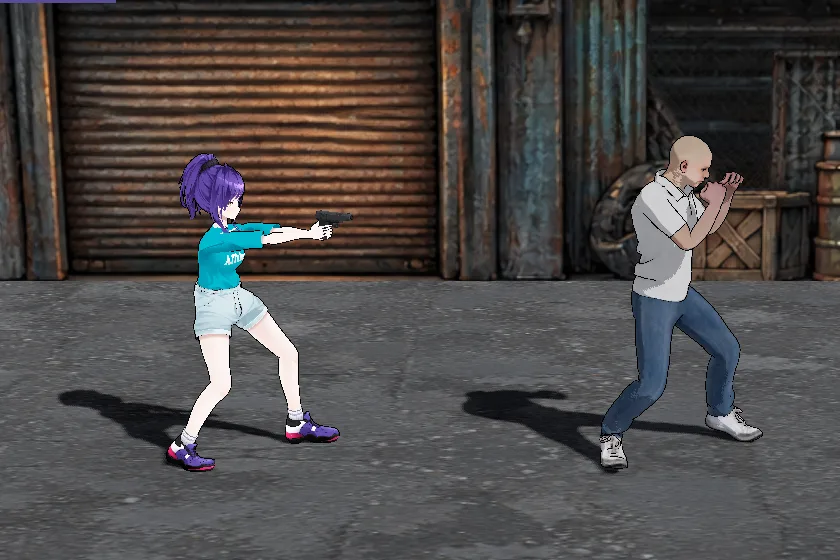
正面へ水平に撃つ。狙う操作は無い。R2 を押している間、連射する（□ は 1 回に 1 発）。L2 でリロード（撃ち切らなくてもできる）。
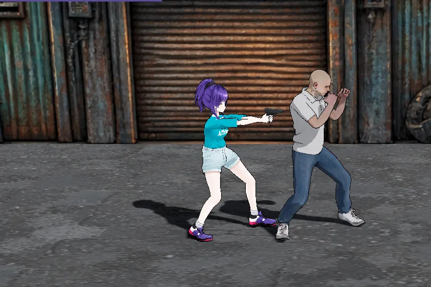
拳銃の残弾が 0 のとき、R2 か □ を押すと空打ちの合図に続けて銃で殴る。
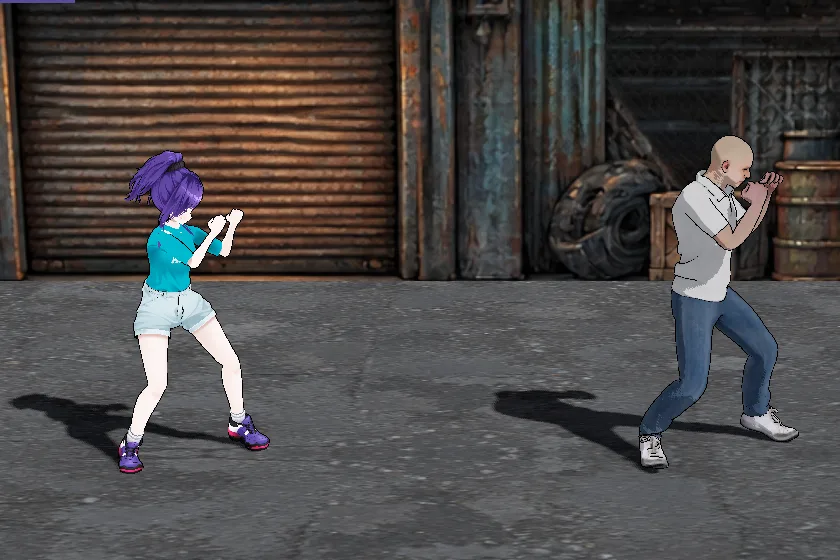
向いている側 1.5 m 以内に掴める敵がいないときの △。走り込んで跳び、周りをまとめて吹き飛ばす。
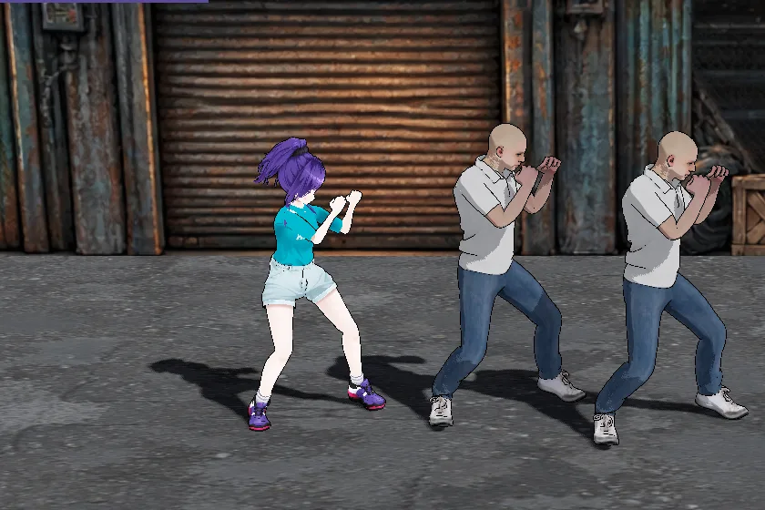
向いている側 1.5 m 以内（奥行き差 0.6 m 以内）に掴める敵がいるときの △。相手の頭を腿で挟み、反動で頭から落とす。ボスと倒れている敵には出ない。
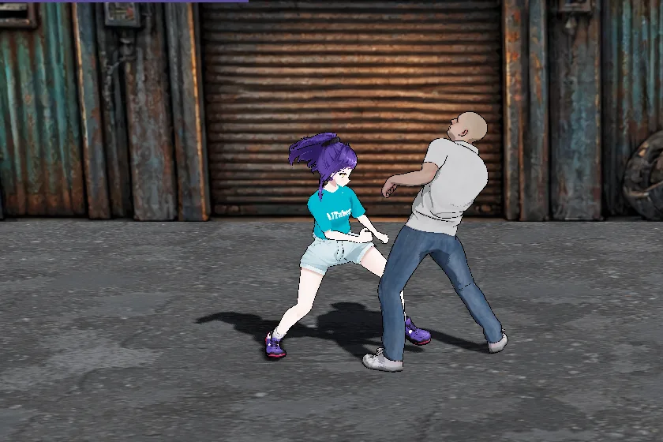
敵が赤い輪郭で振りかぶっている間に、正面 1.3 m 以内（奥行き差 0.6 m 以内）で □。敵を掴んで膝を 3 発入れ、アッパーで打ち上げる。ボスには出ない。
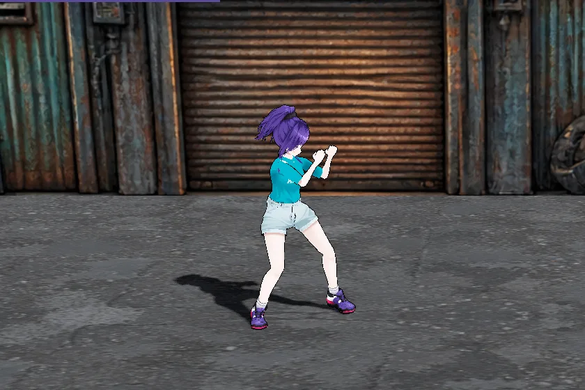
○ を押している間だけ踊り、HP を回復する。止まっていないと始まらず、動く・攻撃する・被弾するとやめる。
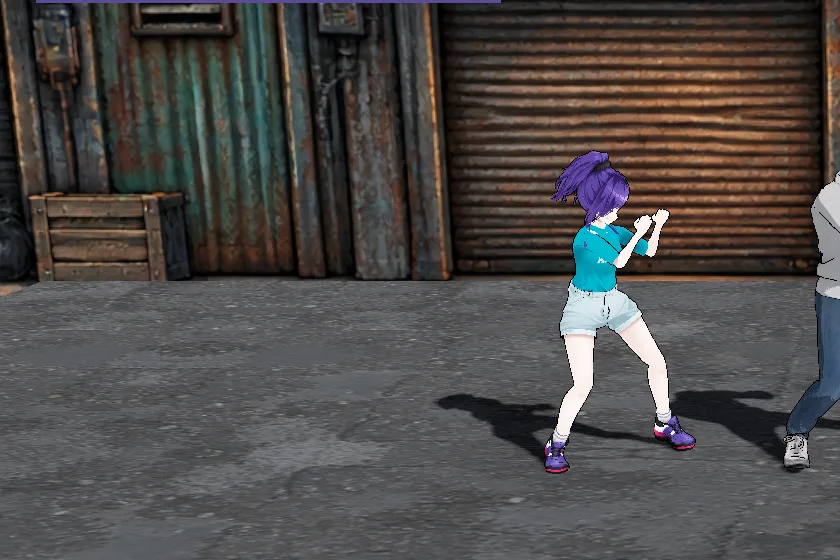
向いている側と逆へ宙返りして下がる。跳んでいる間はずっと無敵。
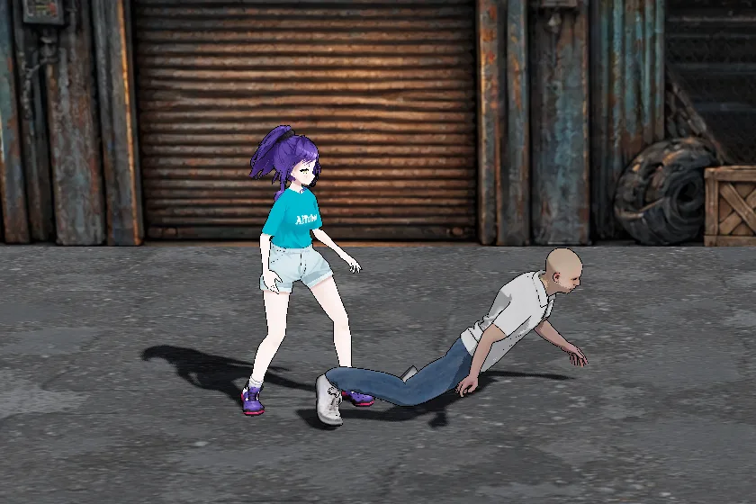
倒れて寝ている敵（HP が残っている）の頭が、向いている側 1.6 m 以内（後ろは 0.3 m まで）・奥行き差 0.6 m 以内にあるときの ×。キックより先に出る。× を押すたびに追い打ちを行う。